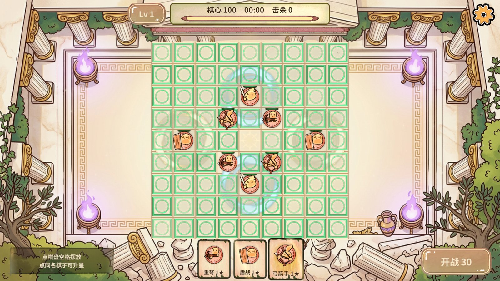
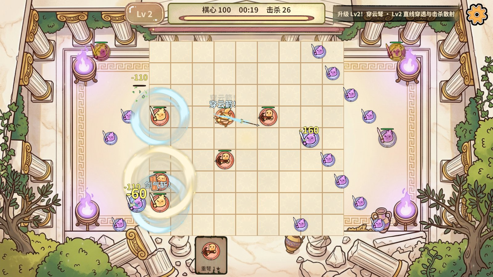
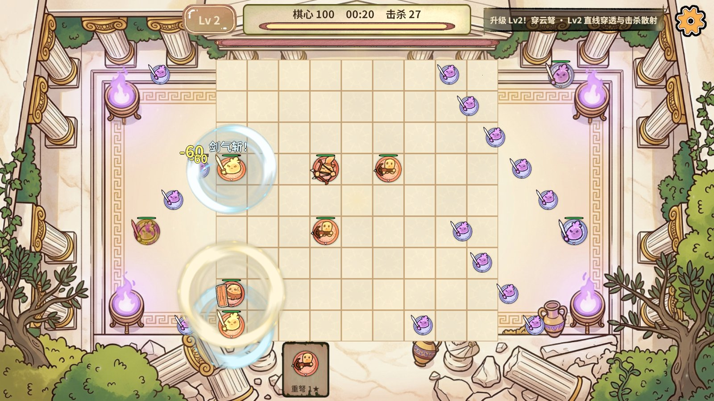
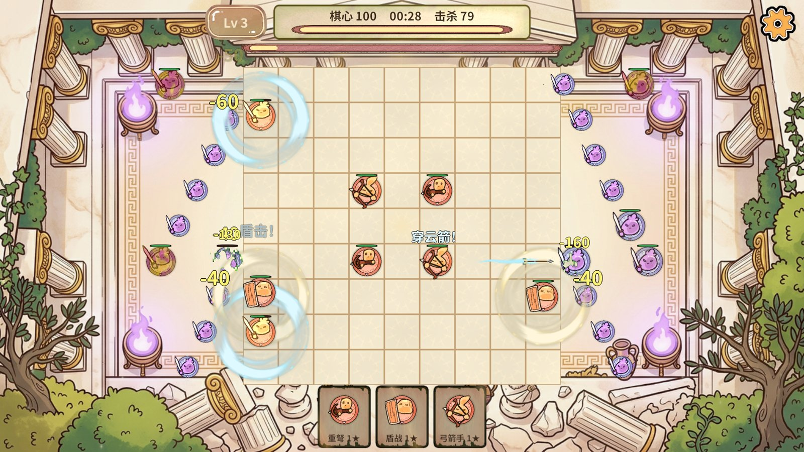
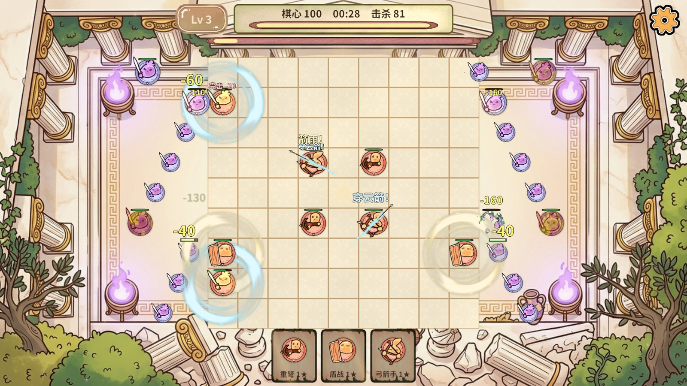
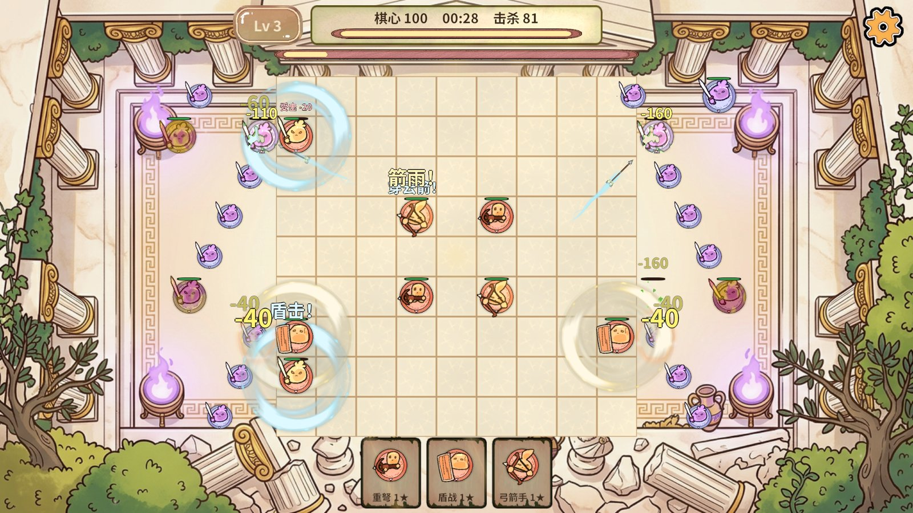
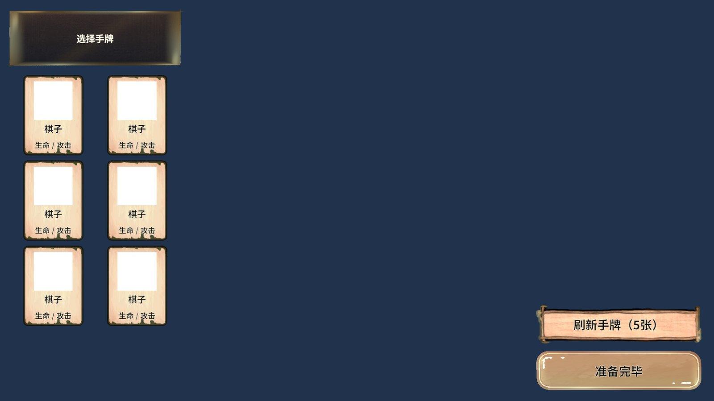
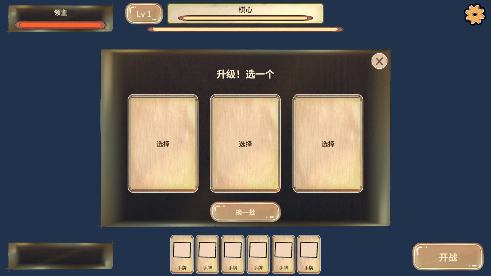
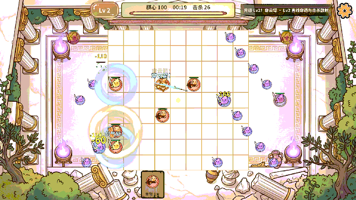

适用范围：本次自动化运行。结论只由断言决定；图片只能证明当时画面，不能替代数值断言。
1. 概览
| 报告目录 | G:\RevRoot\MyRevGame\RevGame_Client\文档\进度同步\无尽割草手感验收_2026-11-02 |
|---|---|
| 截图数量 | 8 |
| 动图数量 | 1 |
2. 指标
| 结论 | 通过（Editor + 真实PC AB 冷启动；手机/真机未测） |
|---|---|
| 规则回归 endless.rules | 通过 |
| 控制台新增错误 | 0 |
| 绿色落子提示格数（选牌后） | 74 |
| 开局棋子 | 8（来自 Excel EndlessFormation） |
| 自动升级 | Lv2、Lv3 均自动获得，阶段保持 Fighting，横幅 2 条 |
| 28秒击杀 / 棋心 | 77 / 100 |
| 剑气圈数 / 剑气命中 | 4 / 78 |
| 组合技释放 | 12 |
| 弹道 / 近战斩击 / 范围 | 78 / 102 / 0 |
| 伤害数字 / 攻击口号 | 176 / 75 |
| 杂兵出生燃烧 / 死亡溶解 | 97 / 79 |
| 外围敌人出生口 | 只左右两侧（上下门 0），全部落在横线上（偏行 0），左 9 行 / 右 8 行 |
| 反馈预算越界 | 无 |
| 整帧 p95 / p99（Editor） | 6.04 ms / 11.93 ms（1800 帧） |
| 服务 Tick 平均 / 最大 | 0.11 ms / 10.72 ms（291 次） |
| GC 计数（Editor 整帧，含编辑器自身） | 约 8.3 MB/s，非游戏单独口径，不能据此宣称零GC |
| BGM | Endless01_Checkpoint 播放中，内存中仅此一首 |
3. 截图








4. 动图
GIF 用来观察动态效果；单帧截图表达不了连招、位移与粒子节奏。

5. 说明
测试通道：RevMCP 的 rev_run 计划（以 rev_mcp.py run 命令行形态执行，非 MCP 会话内工具调用）与 RevCLI 编辑器动作。性能数字是 Unity Editor 整帧，含编辑器与工具开销，不代表手机帧率；真机/小游戏未验证。原始 JSON 证据在 .codex/work/endless-fx（不入库）。